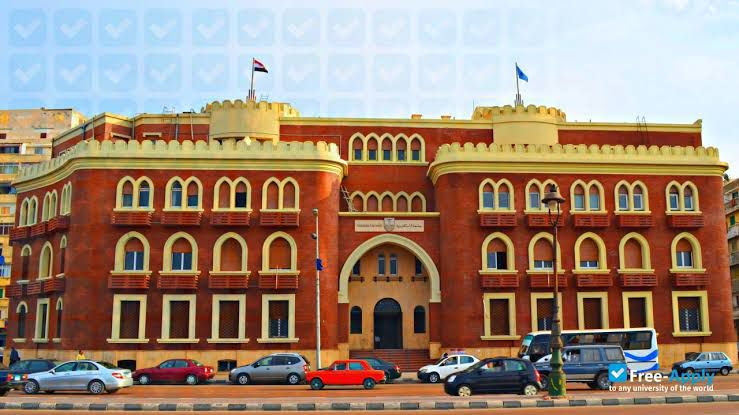

Alexandria University
is a public university in Alexandria, Egypt.
It was established in 1938 as a satellite of Fouad University
(the name of which was later changed to Cairo University),
becoming an independent entity in 1942.
It was known as Farouk University until the 1952 when its name was changed to
the University of Alexandria. Taha Hussein was the founding rector of Alexandria University.
It is now the second largest university in Egypt and has many affiliations to various
universities for ongoing research.
Alexandria University is one of the largest universities in Egypt,
and the third university established after Cairo University and the American University in Cairo.
Alexandria University has 21 faculties and 3 institutes that teach different types of social, medical,
engineering, mathematics and other science. The university had other branches in Egypt
outside Alexandria in Damanhour[2] and Matrouh [3] which later became two independent universities.
and International Branch in New Borg El Arab city. Other branches have been set up outside Egypt in Juba,
South Sudan,[6] and in N'Djamena,[7] the capital of the Republic of Chad. One alumni has won the Nobel Prize.

next